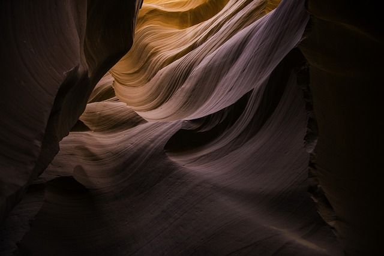

What to Expect
Explore Arrakis, the captivating desert planet steeped in mystery and adventure. Traverse its endless dunes, encounter the resilient Fremen tribes, and uncover ancient secrets beneath the starlit skies. Whether seeking adventure or tranquility, Arrakis offers an unforgettable journey into the heart of the unknown. Embark on your odyssey today and let Arrakis enchant you with its timeless allure.
History of Arrakis
Popular Destinations
Sietch Tabr
Sietch Tabr, nestled in Arrakis' vast dunes, is a stronghold of the resilient Fremen tribe. Within its walls, the Fremen's unity and resourcefulness are evident, shaped by the harsh desert environment. Explore this hidden enclave to discover a community defined by shared determination and a deep connection to the desert's rhythms.
Imperial Palace
The Imperial Palace, towering amid Arrakis' dunes, epitomizes the Padishah Emperor's rule. Within its walls, visitors witness opulence shaped by the desert's harsh embrace. Explore its chambers and gardens, steeped in imperial history and luxury, to uncover Arrakis' regal legacy.
Important Information
expand_more Climate
Arrakis boasts a harsh and arid desert climate, characterized by scorching temperatures and relentless sandstorms. Visitors should expect extreme heat during the day and cool nights, with temperatures often reaching staggering highs. The planet's vast desert expanses stretch endlessly, offering breathtaking landscapes but also posing challenges for travelers. It's essential to come prepared with adequate protection from the sun and sand, as well as ample hydration. Despite the challenging conditions, Arrakis' unique climate promises an unforgettable adventure for intrepid explorers ready to brave its rugged terrain and discover its hidden wonders.
expand_more Transportation
Transportation on Arrakis is unlike anywhere else in the universe, primarily relying on sandworms and ornithopters to navigate its vast desert expanses. Sandworms, colossal creatures native to the planet, serve as the primary mode of transportation for the Fremen tribes, capable of traversing the dunes with unparalleled speed and agility. For those not accustomed to riding sandworms, ornithopters offer an alternative means of travel, soaring gracefully above the desert landscape. Visitors should prepare for exhilarating journeys across Arrakis' rugged terrain, embracing the thrill of adventure and the beauty of the planet's unique transportation methods.